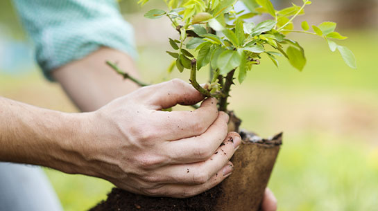
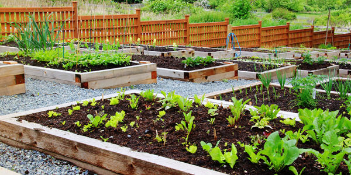
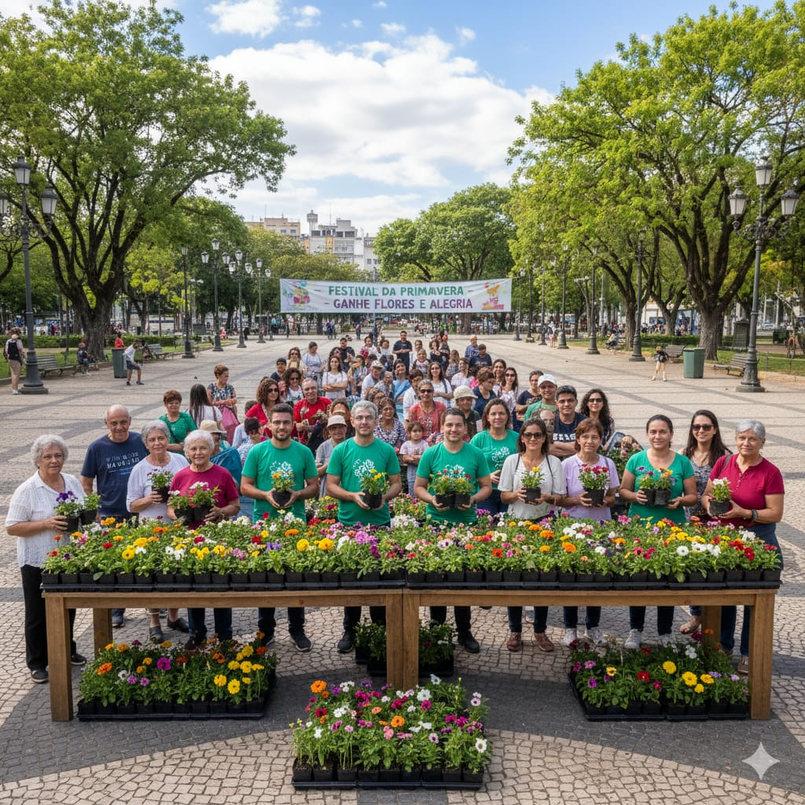
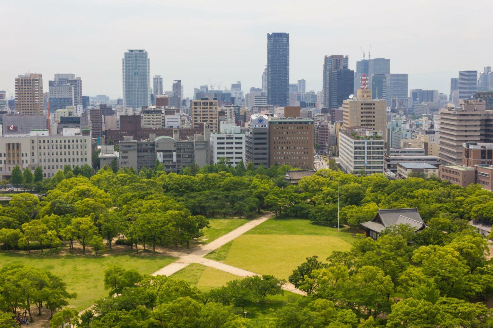

Nossos Projetos
Conheça os projetos VidaVerde, que incentivam o plantio de árvores, flores e hortas, promovendo a conscientização ambiental e a participação da comunidade.
Reflorestamento urbano
Plantio de árvores em praças e áreas verdes da cidade, contribuindo para um ambiente mais saudável e agradável.
Horta comunitária
Incentivo ao plantio de hortas em escolas e bairros, promovendo alimentação saudável e educação ambiental.
Plantando flores
Distribuindo e plantando mudas de flores em prol de um ambiente mais acolhedor, preservado e alegre para todos.
Preservação rural e urbana
Acompanhamento do projeto de preservação das árvores em áreas rurais e urbanas.